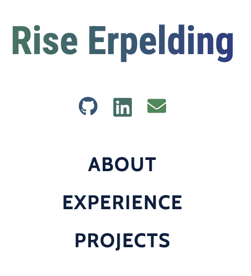
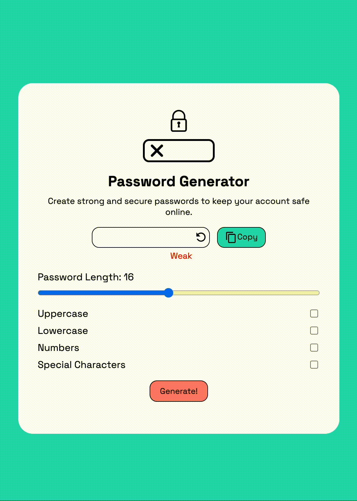
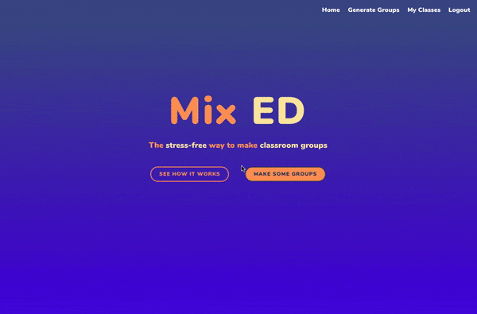
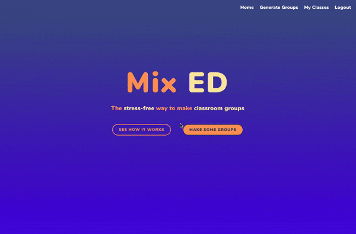
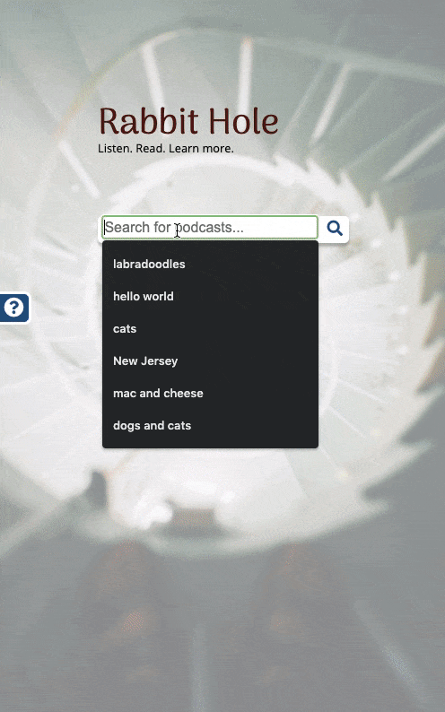
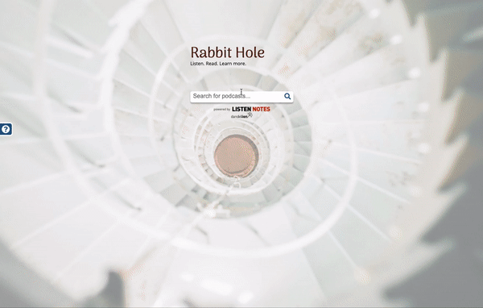
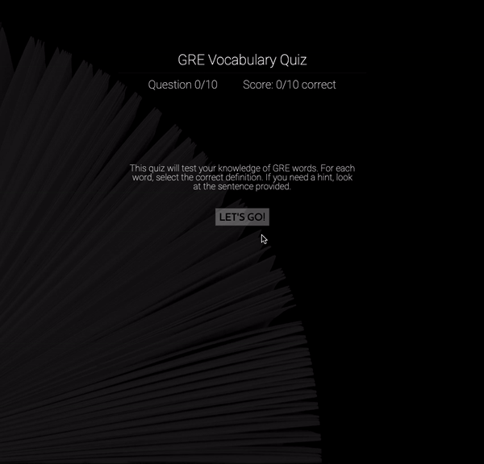

Hi! I'm Rise. I am a full-stack web developer and former K-12 educator. I am passionate about learning technologies and online learning.
About

My name is Rise, and the story of how I came to be a software developer usually goes something like this: I envied the kids who were good at math when I was in school, because (despite taking AP Calculus and passing the AP exam) I didn't think I was one of them. I studied sociology in college because I didn't think I'd do well at anything that required more math, but earned the highest grade in my college statistics class.
I found my way into education through teaching ESL in Japan, and upon returning to the US, made my first steps into the STEM career that I secretly always wanted when I became certified to teach high school math. I worked my way up to a teaching position and taught my students Geometry, AP Statistics, and that their self-perceived weakness in math, or anything else, shouldn't hold them back from the careers they wanted.
Meanwhile, when working up to that teaching position, I'd started working in a computer lab with students taking online classes, and saw the potentials and pitfalls of online learning, so I pursued a master's degree in online instructional design at Florida State University. This, in turn, piqued my interest in the technology powering online learning, and I went to coding bootcamp to learn how to code.
I have been working in software development professionally since 2020 and have worked with a variety of technologies since then, including JavaScript, React, HTML, CSS, Go, PHP, and more. Known for my attention to detail and strong communication skills, I excel at writing PR validation instructions and Jira cards and providing great feedback. I also love QA and relish the opportunity to find (and squash!) a bug.
On a personal level, I'm a military spouse, a mom, an avid runner, a piano player, and have a 1300+ day streak on Duolingo. I've called 4 US states and 2 countries outside of the US home in my lifetime and have been known to happy dance while eating.
Using the links, you can view my work on GitHub, find me on LinkedIn, or email me.
Experience
Technical Experience
-
Implemented major redesign for global retailer's ecommerce product landing page, increasing engagement by over 25% and "Add to Cart" rate by 5%; debugged longstanding issues in production and development environments; initiated Storybook site to display and document components specific to the product landing page.
-
Developed mobile app to store and send vehicle maintenance data.
-
Migrated 700+ news pages, 200+ faculty pages, and multiple other page and content types from Drupal to WordPress for a higher education organization.
-
Programmed Slack app to send customizable weekly Slack message to employees containing project forecast data.
-
Developed front-end app to retrieve quotable content from Slack.
- Also, see a few of my Personal Projects, as well as my GitHub account.
Non-Technical Experience
-
Mentorship
Mentored apprentices in company's full-stack web developer apprenticeship program, holding weekly 1:1 meetings, reviewing code, and providing feedback about best professional and web development practices. Led and mentored military spouses to coordinate family outreach, fundraising, and social events for military active duty flying unit.
-
Instructional Design
Experience creating, launching, and maintaining instructional content in financial literacy and childbirth education.
-
Teaching
Developed and delivered high school and AP math curriculum, maintaining communication with students, parents, administrators, and guidance counselors, accommodating student needs.
Projects
-
My Portfolio
My last portfolio site used React, which was a bit much for something so simple. This one eliminates the routing of the previous version and keeps things simple, using Parcel to bundle files.
 -
Password Generator
Built with Solid.js, this password generator app allows users to generate passwords with length and character requirements of their choosing.
 -
Tiles!
Tiles! is an app that allows users to create a color grid by selecting 4 corner colors and a grid size. This creates a color grid that, at a distance, will resemble a gradient. Once the color grid is created, users can play a game in which the color tiles in the grid are scrambled and they must put them back in order.

-
MixEd
MixEd is a group generator app that allows teachers to create student groups, optionally using student data to help form groups. With the abilities to make any-sized groups based on any qualitative or quantitative attribute, save generated groups, and drag and drop student names to manually adjust groups as desired, this app can do many things for any teacher wishing to generate groups for their students. Use the sample data to get a feel for what the app can do!
Note: A portion of this project was hosted with Heroku free tier when it existed--therefore the app may no longer work as intended.
 

-
FarmPicks
FarmPicks is a platform with user-generated content for users seeking information about local farms to search and browse farms. Users can save farms to their favorites to revisit later, and be part of the community effort to improve existing information about farms.
Note: A portion of this project was hosted with Heroku free tier when it existed--therefore the app may no longer work as intended.


-
Rabbit Hole
Rabbit Hole is a search engine that allows podcast listeners to find educational podcasts, listen to them, and see links to Wikipedia articles that may be related. Users also have the option to search Wikipedia or click on links to other wikipedia articles inside the app, allowing for a user experience akin to "falling down a rabbit hole."
  -
GRE Quiz App
This is a quiz app built using jQuery. Intended for aspiring graduate students studying for the GRE, the app tests users’ knowledge of GRE vocabulary words via multiple-choice questions, giving examples of the words in a context similar to what a user might encounter in graduate-level studies.
